202号室
ダブルベッドのロフトと、明るいリビング。


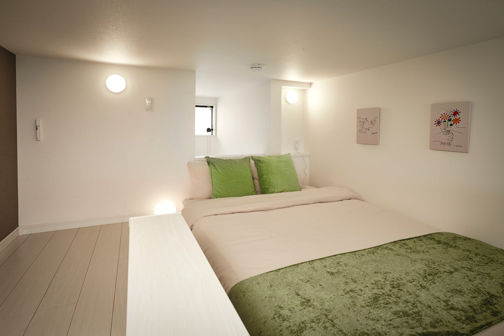


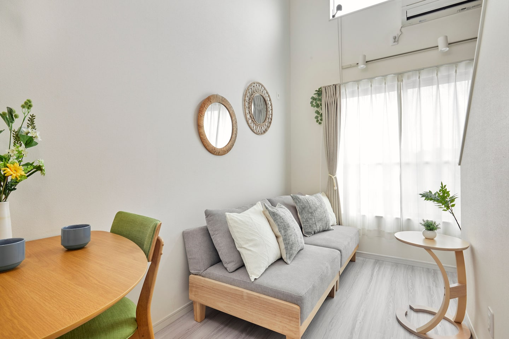

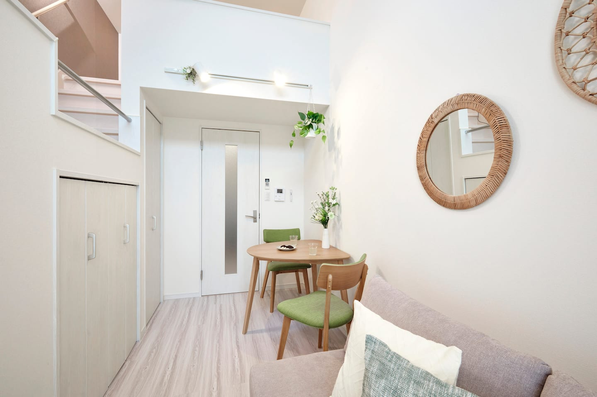

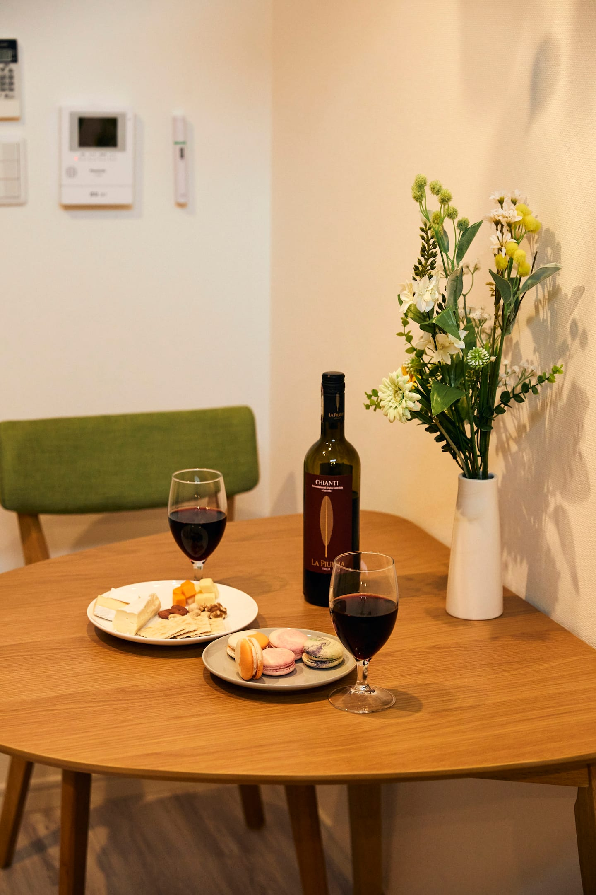

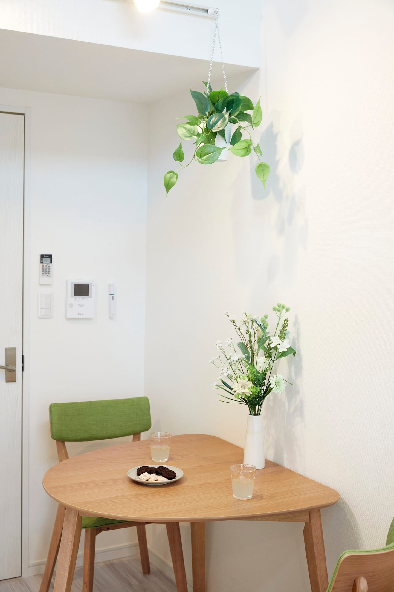


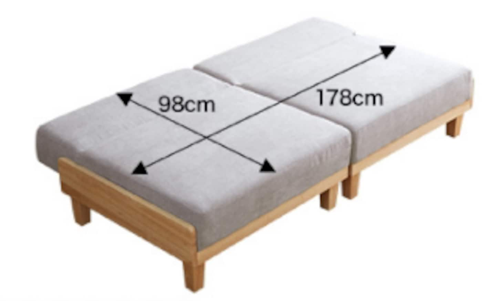

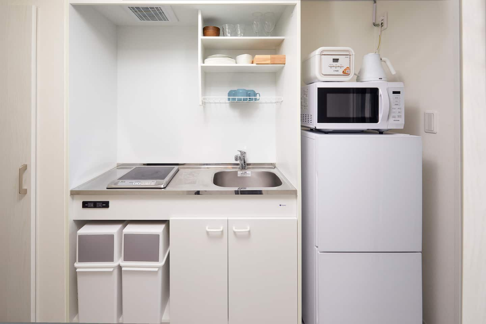

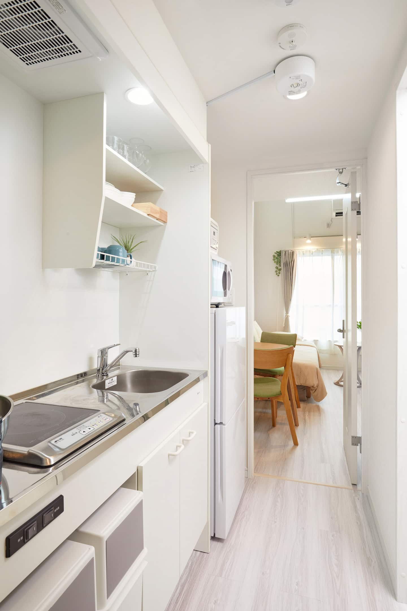


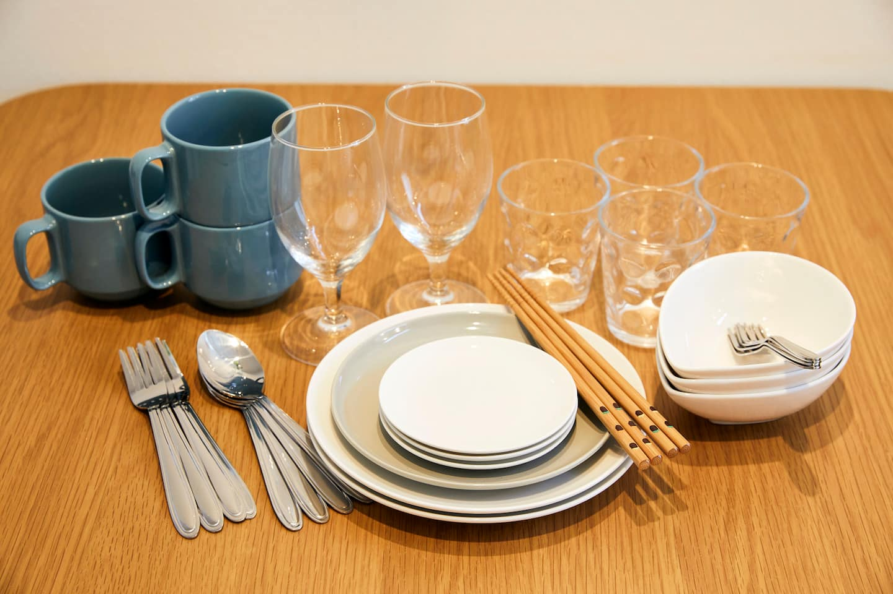

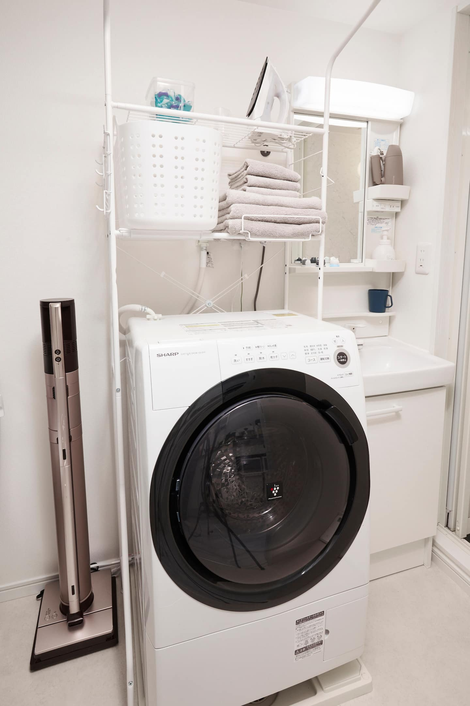


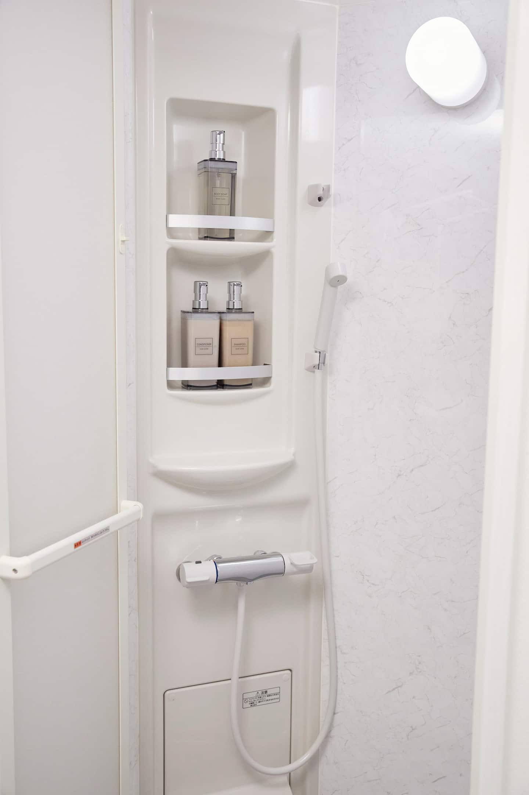

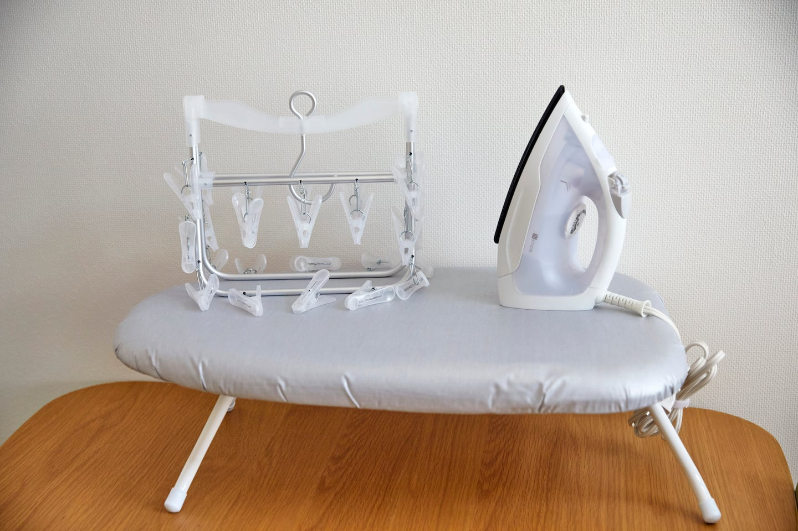

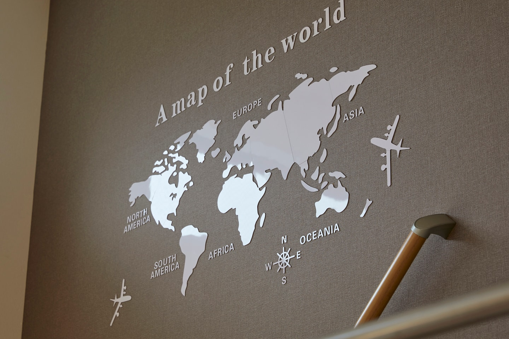
※オンライン予約は準備中です。
お部屋の特徴
| 階 | 2階（階段のみ） |
|---|---|
| 間取り | 1K 20㎡＋ロフト5㎡（メゾネット） |
| 定員 | 3名まで |
| ベッド構成 | ダブルベッド＋ソファベッド（98×178cm） |
| チェックイン/アウト | 16:00〜 ／ 10:00まで（セルフチェックイン） |
このお部屋の特徴
- ロフトが寝室、下階がくつろぎスペースのメゾネット
- ダブルベッド＋ソファベッド
- ダイニングテーブルあり（専用のワークデスクはありません）
設備・備品
全室共通
- キッチン（IHコンロ）・シンプルな食器類
- ドラム式洗濯乾燥機
- 電子レンジ・電気ケトル・炊飯器
- エアコン・サーキュレーター・室内物干し
- 24インチモニター（PC・ゲーム機をつなげます。テレビ放送は見られません）
- タオル・シーツ
- シャンプー・コンディショナー・ボディソープ
- アイマスク・耳栓
- コーヒー・紅茶
- シャワールーム（バスタブはありません）
- アイロン
- セルフチェックイン（電子錠）
このお部屋ならでは
- ダイニングテーブル（専用ワークデスクはありません）
間取り図
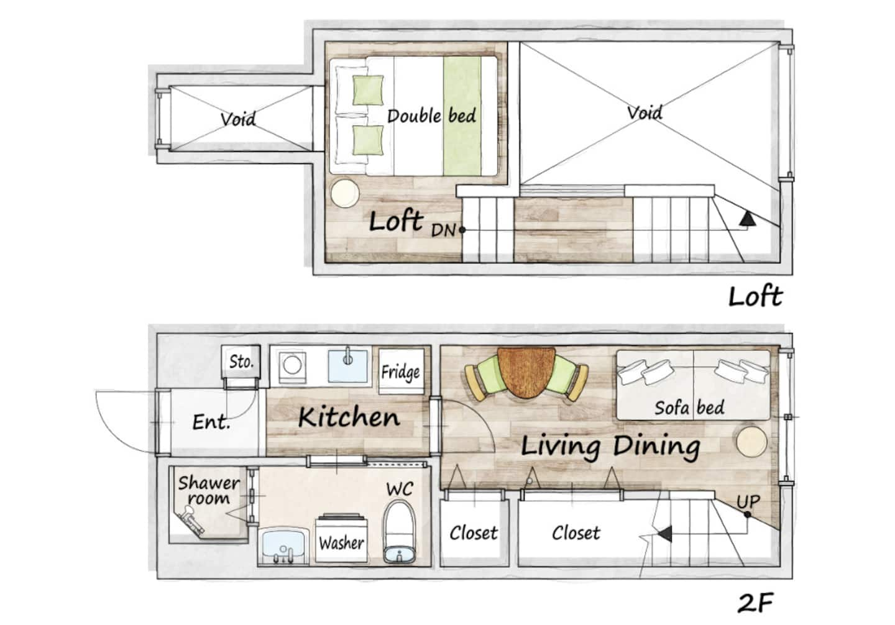
ご予約前にご確認ください
- エレベーターはありません。階段が狭く、大型のスーツケースは運びにくいです（201・202は2階です）。
- JR鶴見駅からは上り坂があります。荷物が多いと負担になることがあります。
- ロフトは天井が低めです。背の高い方は頭上にご注意ください。
- ロフトのベッドの端に柵がありません。小さなお子様連れの方はご注意ください。
- 曇りガラスの天窓があり、朝の光が入ります（アイマスクをご用意しています）。
- バスタブはなく、シャワールームのみです。
- テレビ放送は見られません（モニターにPC・ゲーム機などをつないで使います）。
※オンライン予約は準備中です。